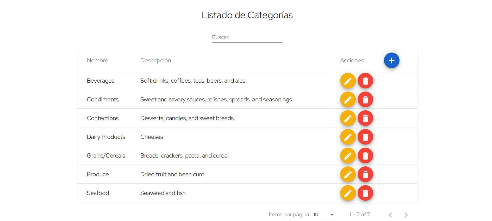
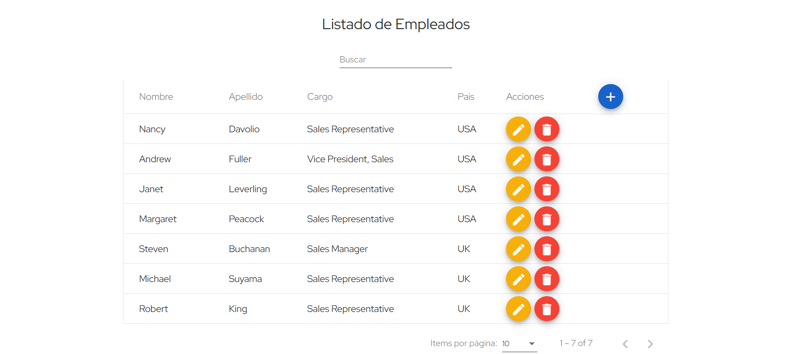

<div>
  <div class="div-mat-card">
    <mat-card class="example-card mat-card-CRUD">
      <mat-card-content>
        <p>Operaciones CRUD realizadas sobre las entidades Categories y Employees <br> de la base de datos Northwind</p>
      </mat-card-content>
      <mat-card-subtitle>Federico Gordillo</mat-card-subtitle>
    </mat-card>
  </div>
</div>

<div class="div-container-items">
  <mat-card class="example-card mat-card-list-1">

    

    <mat-card-actions class="mat-card-actions-display">
      <button class="btn btn-primary" [routerLink]="['/listadoCategorias']">Listado Categorías</button>
    </mat-card-actions>
  </mat-card>

  <mat-card class="example-card mat-card-list-2">
    

    <mat-card-actions class="mat-card-actions-display">
      <button class="btn btn-primary" [routerLink]="['/listadoEmpleados']">Listado Empleados</button>
    </mat-card-actions>
  </mat-card>
</div>
